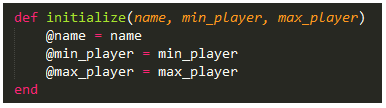
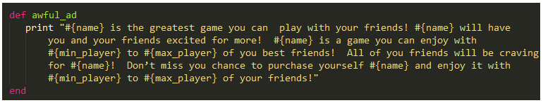
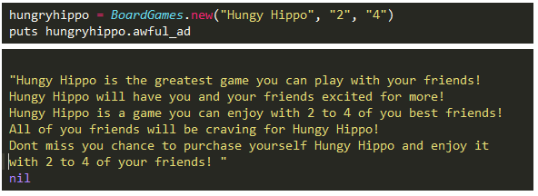

Classes are used when we want to create a way to organize and produce methods and attributes. Think of it as the blueprint from which individual objects are created.
Lets say you wanted to list the product details or advertise some Board Games. Perhaps you wanted to categorize their name along with the minimum and maximum number of players. You want to create a general ad that will captivate kids into buying your product. We won’t be winning any sales awards anytime soon, so we’ll keep it simple.
We can start by designating a class in CamelCase. For example to start we would type ‘class BoardGames’. So now, our “BoardGames’ has the ability to create new Ruby objects of class “BoardGames”.

@ is an indicator that the object is an instance variable. Without it, they would be local variables and their scope would only be within the block of the method. By making it an instance variable, their scope reaches across multiple blocks of code, but only within the limits of the class.
Moving on, lets say we define another method that completes a desciption of the ad.

So we’ve set up an advertisement that will pull in the details from instance variables and apply them to our string.
Let’s pick something parents think is a good purchase for their children that they’ll later regret.

With this potential, we could expand this to simple product descriptions on multiple website pages. That’s tasting a Ruby.